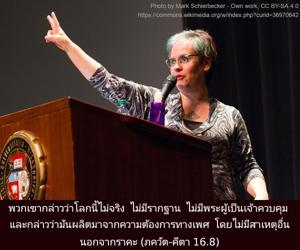
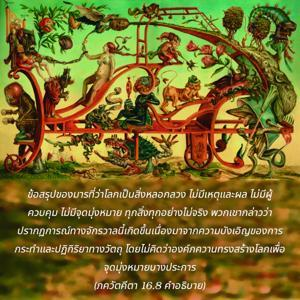
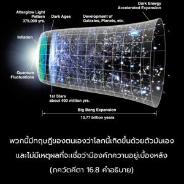

พวกเขากล่าวว่าโลกนี้ไม่จริง ไม่มีรากฐาน ไม่มีพระผู้เป็นเจ้าควบคุม และกล่าวว่ามันผลิตมาจากความต้องการทางเพศ โดยไม่มีสาเหตุอื่นนอกจากราคะ



ข้อสรุปของมารที่ว่าโลกเป็นสิ่งหลอกลวง ไม่มีเหตุและผล ไม่มีผู้ควบคุม ไม่มีจุดมุ่งหมาย ทุกสิ่งทุกอย่างไม่จริง พวกเขากล่าวว่าปรากฏการณ์ทางจักรวาลนี้เกิดขึ้นเนื่องมาจากความบังเอิญของการกระทำและปฏิกิริยาทางวัตถุ โดยไม่คิดว่าองค์ภควานฺทรงสร้างโลกเพื่อจุดมุ่งหมายบางประการ พวกนี้มีทฤษฎีของตนเองว่าโลกนี้เกิดขึ้นด้วยตัวมันเอง และไม่มีเหตุผลที่จะเชื่อว่ามีองค์ภควานฺอยู่เบื้องหลัง สำหรับพวกมารไม่มีข้อแตกต่างระหว่างวิญญาณและวัตถุ และไม่ยอมรับดวงวิญญาณสูงสุดทุกสิ่งทุกอย่างเป็นเพียงวัตถุเท่านั้น จักรวาลทั้งหมดเข้าใจว่าเป็นอวิชชามหึมาก้อนหนึ่ง ตามแนวคิดของพวกนี้ทุกสิ่งทุกอย่างว่างเปล่า ปรากฏการณ์อะไรก็แล้วแต่ที่มีอยู่ก็เนื่องมาจากอวิชชาในการสำเหนียกของตนเอง เพราะเชื่ออย่างจริงจังว่าปรากฏการณ์อันหลากหลายทั้งหมดเป็นการแสดงออกของอวิชชา เหมือนกับในความฝันเราอาจสร้างหลายสิ่งหลายอย่างขึ้นมาซึ่งความจริงมันไม่ได้มี ดังนั้นเมื่อตื่นขึ้นเราจะเห็นว่าทุกสิ่งทุกอย่างเป็นเพียงความฝัน แต่อันที่จริงถึงแม้ว่าพวกมารกล่าวว่าชีวิตคือความฝันแต่ก็มีความชำนาญมากในการรื่นรมย์อยู่กับความฝันนี้ ดังนั้นแทนที่จะได้รับความรู้กลับพัวพันมากยิ่งขึ้นในดินแดนแห่งความฝัน และสรุปว่าทารกเป็นเพียงผลแห่งเพศสัมพันธ์ระหว่างชายและหญิง โลกนี้เกิดขึ้นมาโดยปราศจากดวงวิญญาณ มันเป็นเพียงการรวมตัวกันของวัตถุที่ผลิตสิ่งที่มีชีวิตโดยไม่ต้องมีคำถามว่าจะมีดวงวิญญาณหรือไม่ เหมือนกับที่หลายชีวิตออกมาจากเหงื่อและออกมาจากซากศพโดยไม่มีสาเหตุ สิ่งมีชีวิตทั้งหมดก็ออกมาจากการรวมตัวกันทางวัตถุของปรากฏการณ์แห่งจักรวาล ฉะนั้นธรรมชาติวัตถุเป็นต้นเหตุของปรากฏการณ์นี้และไม่มีสาเหตุอื่น พวกเขาไม่เชื่อในคำดำรัสขององค์กฺฤษฺณใน ภควัท-คีตา ว่า มยาธฺยกฺเษณ ปฺรกฺฤติห์ สูยเต ส-จราจรมฺ “ภายใต้การกำกับของข้า โลกวัตถุทั้งหมดจึงเคลื่อนไหว” อีกนัยหนึ่งในหมู่มารไม่มีความรู้สมบูรณ์แห่งการสร้างโลก มารทุกรูปจะมีทฤษฏีบางอย่างโดยเฉพาะของตนเองตามความคิดของพวกนี้ การตีความหมายของพระคัมภีร์หนึ่งก็ดีเท่าๆกับพระคัมภีร์เล่มอื่น เพราะว่าพวกเขาไม่เชื่อในความเข้าใจมาตรฐานแห่งคำสั่งสอนของพระคัมภีร์